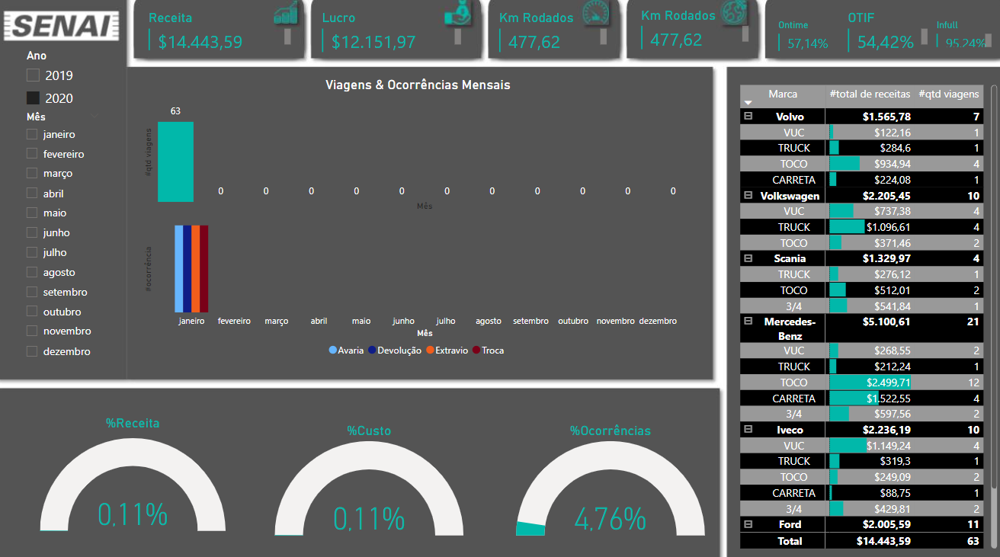

Projetos
Comercial

Neste projeto usei uma base de dados do setor de comércio de varejo b2c.
1. Tive que realizar o tratamentos dos dados no excel, separando os itens de acordo com a categoria, usando procx e procv, e fórmulas afins, acrecentando e excluindo células para melhor vizualização dos dados brutos.
2. Identificando os insights, como ano, mes, receita, receita AA, total de clientes, %quantidade de clientes, região de venda, Categoria dos produtos, vendedores, um detalhado dos clientes com receita, ticket médio, frequência de compras, mix de produtos, e posição dos clientes para tomar ações de imediato.

3. Estou pensando nas métricas de geração de valor e de receita para entender nossa posição no mercado. Vou incluir também as métricas dos vendedores, para que possamos identificar quem mais vendeu e quem teve um desempenho menor. Isso nos permitirá ver em quais categorias eles são fortes e fracos, além de identificar aqueles que não estão trabalhando para alcançar os resultados esperados. Com essas informações, posso incluir esse aspecto na nossa ajuda interna, verificando como podemos apoiar cada vendedor e melhorar seu desempenho. Dessa forma, teremos uma visão mais completa para otimizar nossas estratégias de marketing e vendas.
4. Implementação e ajustes.
5. Detalhes de Vendas por vendedores

Logistica
Neste projeto usei uma base de dados do setor logistico de entregas.
1. Tive que realizar o tratamentos dos dados no excel, acrecentando colunas, para melhor distribuição dos dados.
2. Identificando os insights, como Ano, mes, Receita, Lucro, Km rodados,Ontime,Otif e Infull
3. Pensando no layout e cores.
4. Implementação e ajustes.
Estou analisando a estrutura dos prestadores de serviço para entender melhor quem oferece o melhor custo e tempo de entrega. Posso verificar quantas viagens cada um realizou, qual o tipo de caminhão que utilizam e quais tiveram problemas em alguma entrega, registrando ocorrências. Com essas informações, poderei comparar e identificar o prestador que melhor atende as necessidade da empresa.
Estou analisando a estrutura dos prestadores de serviço para entender melhor quem oferece o melhor custo e tempo de entrega. Posso verificar quantas viagens cada um realizou, qual o tipo de caminhão que utilizam e quais tiveram problemas em alguma entrega, registrando ocorrências. Com essas informações, poderei comparar e identificar o prestador que melhor atende as necessidade da empresa.
Call Center
Neste projeto usei uma base de dados do setor de serviços na operação de Call Center.
1. Os dados aqui estavam bem organizados.
2. Estou focado em identificar insights importantes para melhorar nosso atendimento. Vou analisar dados como o total de clientes atendidos ao longo do ano, o tempo total de ligações, e a nota média das avaliações dos telefonemas. Além disso, quero calcular o coeficiente de atendidas e não atendidas, bem como de resolvidas e não solucionadas. Vou segmentar as ligações por departamento e fazer uma contagem detalhada por área, além de avaliar as métricas individuais de cada funcionário. Com esses insights, teremos uma visão clara do desempenho de cada departamento e colaborador, o que nos permitirá identificar oportunidades de melhoria e reconhecer os que estão se destacando. Isso contribuirá para otimizar nosso atendimento e, consequentemente, aumentar a satisfação dos clientes.
Criação do banco de Dados para um Hospital.
1.Comecei um organograma dos setores e fluxos de trabalho, coletando as necessidades sistêmicas para implementar um banco de dados o mais completo possível.
2. Identifiquei a coligação entre os setores para modelar as chaves primárias, considerando relacionamentos de um para poucos e um para muitos. Estou pensando também na necessidade de complementadores automáticos e tipos de dados como VARCHAR, para garantir flexibilidade e eficiência na estrutura do banco de dados.
3. Mão na massa no sql.
Campeonato Brasileiro de Futebol.
Neste projeto foi extraido os dados dos campeonatos num site na internet.

1. Consultar o resultado dos jogos de um time exporádico, na primeira rodada de todos dos campeonatos.
Consultei o Corinthians onde é um time com a maior torcida do Brasil.

2. Agora contar quantas vitórias o time teve no campeonato de 2016.
Usei COUNT(CASE WHEN (rodada.mandante = 'Corinthians' AND rodada.mandante_placar > rodada.visitante_placar) THEN 1 WHEN (rodada.visitante = 'Corinthians' AND rodada.visitante_placar > rodada.mandante_placar) THEN 1 END) AS Vitorias para fazer função e chamar uma nova coluna na tabela de Vitorias.
3.Ranking de artilheiros e seus clubes de todos os anos.